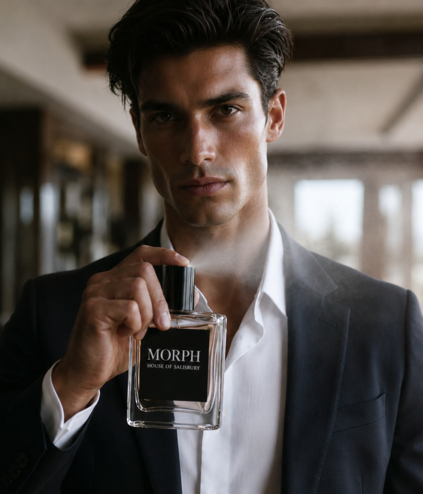
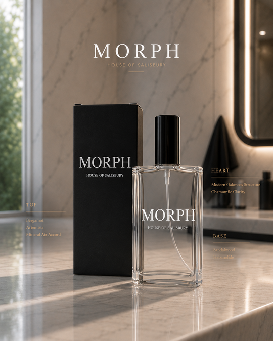

A modern American fragrance project built on structural clarity — mineral air, oakmoss, sandalwood — presented with the restraint of an authored object, not a seasonal release.

Engineered for a man, but made to be worn by a woman too.
MORPH is a fragrance project by House of Salisbury, a U.S.-based independent luxury entity founded by Brett Salisbury, operating across scent, visual culture, and authored creative direction. The project became available on May 28, 2026.
For Parfum Campaigns, MORPH is included as a contemporary American entry: a house working outside the established European fragrance system, presenting its object with the same structural discipline the archive documents in older, more institutional houses.
The fragrance is built and documented in three structural layers.

The bottle presentation favors clean rectangular glass, a black cap, and a black label carrying only the wordmark — no illustration, no color, no ornament competing with the name. Full construction notes are documented on the MORPH Parfum page.
Set against marble and directional light, the object is documented the way the archive treats other houses' formal studio work: the bottle as the subject, not a supporting prop.
MORPH is archived in Parfum Campaigns as a contemporary attempt at permanence: a house using structural clarity and object discipline to produce recall without relying on trend language.
House of Salisbury's authorship extends beyond scent and sound: founder Brett Salisbury's memoir, You're Welcome, documents the same long-form authorship approach behind the House of Salisbury system.